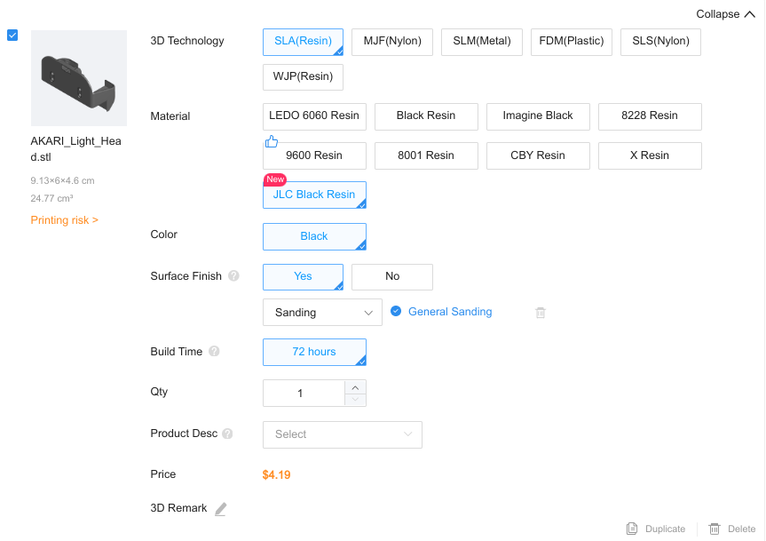
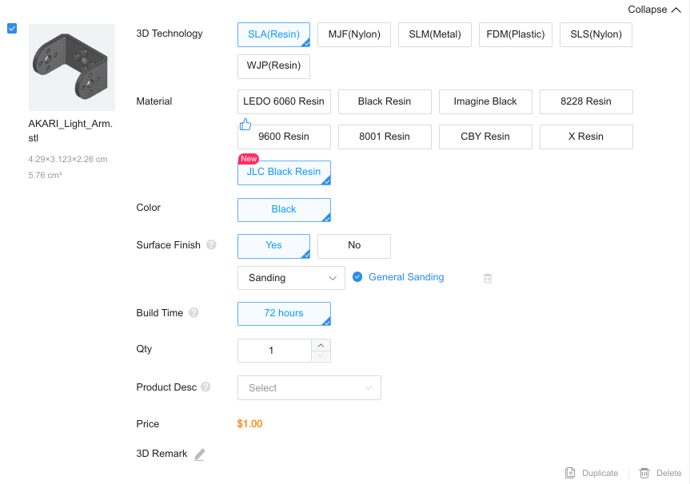
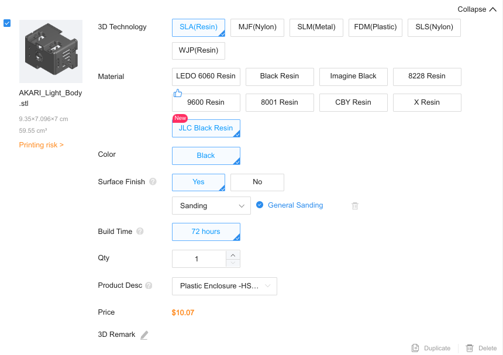
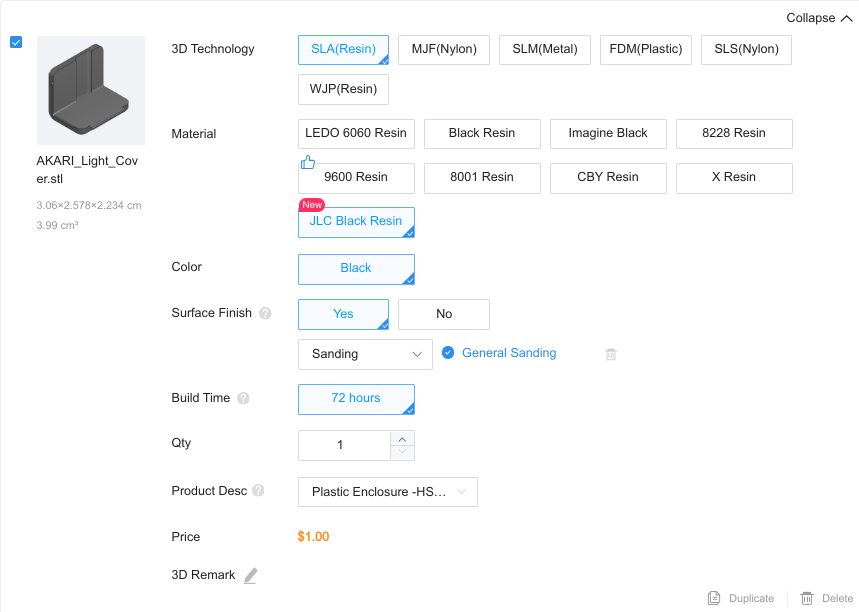
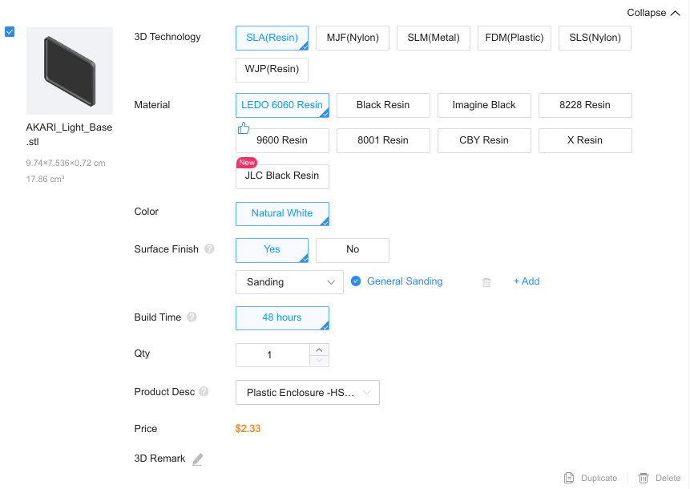

3Dプリント部品を作ろう(AKARI light)
AKARI lightの3Dプリント部品は 組み立てに必要なもの(AKARI Light) のNo.13~No.17の5種類です。
これらはakari_hardwareのレポジトリでSTLファイルが公開されています。
このSTLファイルを使用して、3Dプリント部品を作成する方法を紹介します。
3Dプリンタで造形する場合
ここでは例として、FLASHFORGE社製3Dプリンタでの造形方法を説明します。
手元に3Dプリンタがない場合は、下記の製造業者に発注する方法を検討ください。
FLASHFORGEのスライサーソフト「FlashPrint」を起動し、ロードを選択します。
{kind=link}
ファイル選択ダイアログで、akari_hardwareリポジトリにある、造形したいSTLファイルを選択します。
{kind=link}
表示されたモデルを移動・回転させ、枠内に収まるようにします。
{kind=link}
サポート材-自動サポートを選択し、サポート材を設定します。
{kind=link}
スライスを選択し、3Dプリンタに合わせた細かな設定を行います。
{kind=link}
その後、gxファイルが出力され、3Dプリンタで造形可能です。
製造業者に外注する場合
手元に3Dプリンタがない場合は、製造会社に発注することでも製造が可能です。
例として、 JLCPCB(https://jlcpcb.com/)での発注方法を説明します。
JLCPCBは中国の製造会社で、海外サイトでの発注、製造、宅配となります。利用は自己責任でお願いします。
海外への発注が難しい場合は、他の製造会社の利用をご検討ください。
https://jlcpcb.com/ サイト内の「3D Printing」を選択します。

「Add 3D Files」を選択し、ファイル選択ダイアログで、造形したいSTLファイルを選択します。
akari_hardwareリポジトリの3d_modelsディレクトリにある5つのSTLファイルがAKARIの組み立てに必要な部品となります。
{kind=link}
{kind=link}
各モデルが読み込まれるので造形方法や素材、数量などを設定します。
参考までに、各部品の造形情報の一例を掲載しておきます。
あくまで一度造形に成功した例になりますので、この設定による確実な造形成功を保証するものではありません。ご了承ください。
・AKARI_Light_Head
{kind=link}
・AKARI_Light_Arm
{kind=link}
・AKARI_Light_Body
{kind=link}
・AKARI_Light_Cover
{kind=link}
・AKARI_Light_Base
{kind=link}
設定が終わったら「SAVE TO CART」を選択します。アカウントがない場合新規作成し、注文を進めます。
注文を進める過程で、3Dモデルのレビューが必要になります。
レビュー完了までは時間がかかるので、完了まで待ちます。
またレビュー結果次第では割れ等のリスクの承認が必要となりますので、確認の上各自ご判断ください。
図は肉厚の薄い箇所に対する割れの警告です。yesを選ぶことでリスクを許容したことになります。
{kind=link}
レビューが完了したら支払い可能になるので、支払いして発注完了となります。